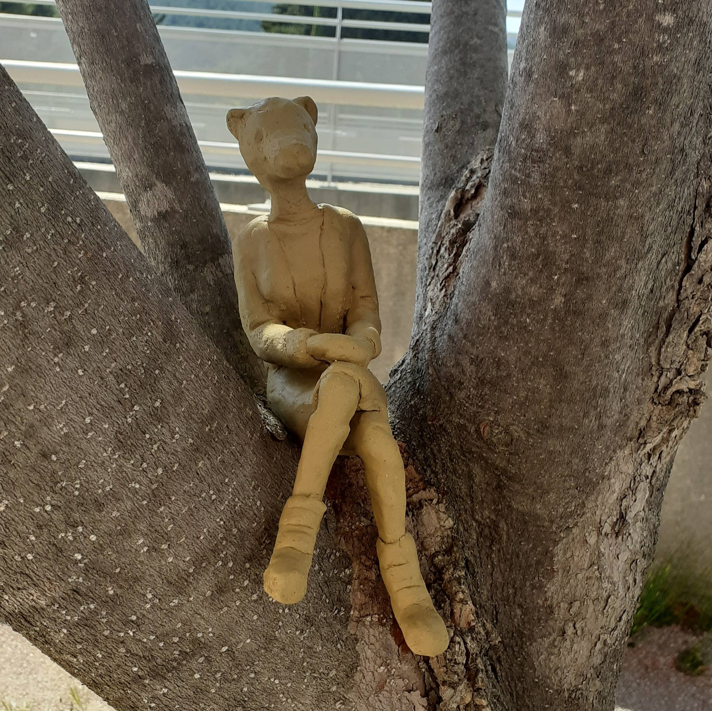
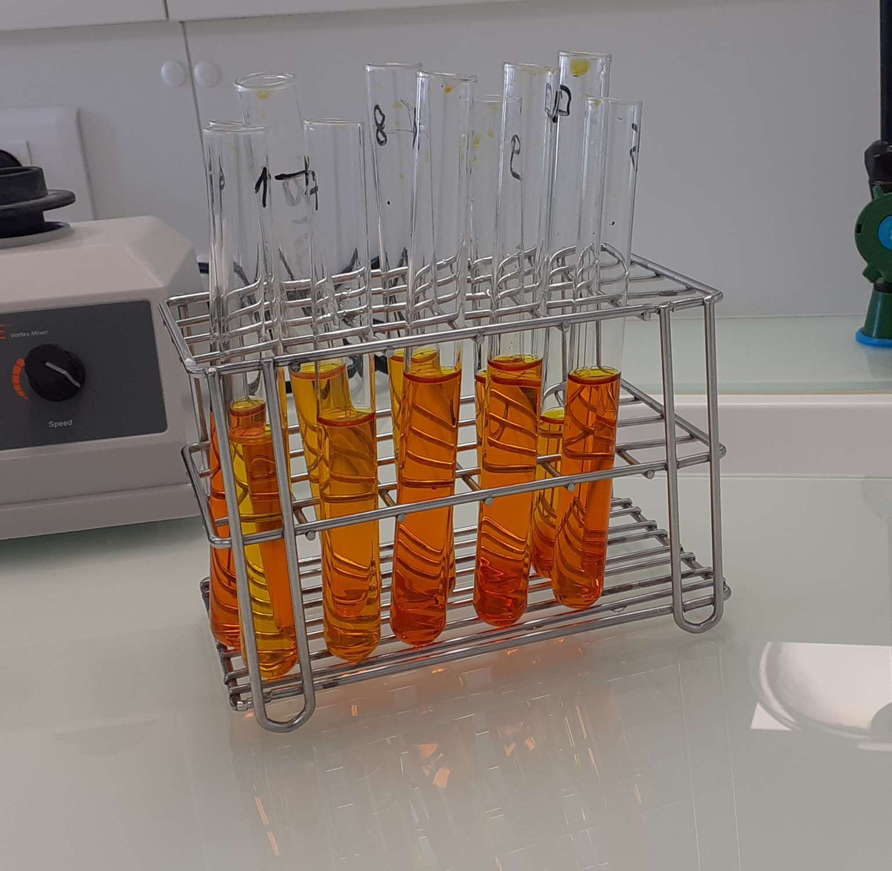
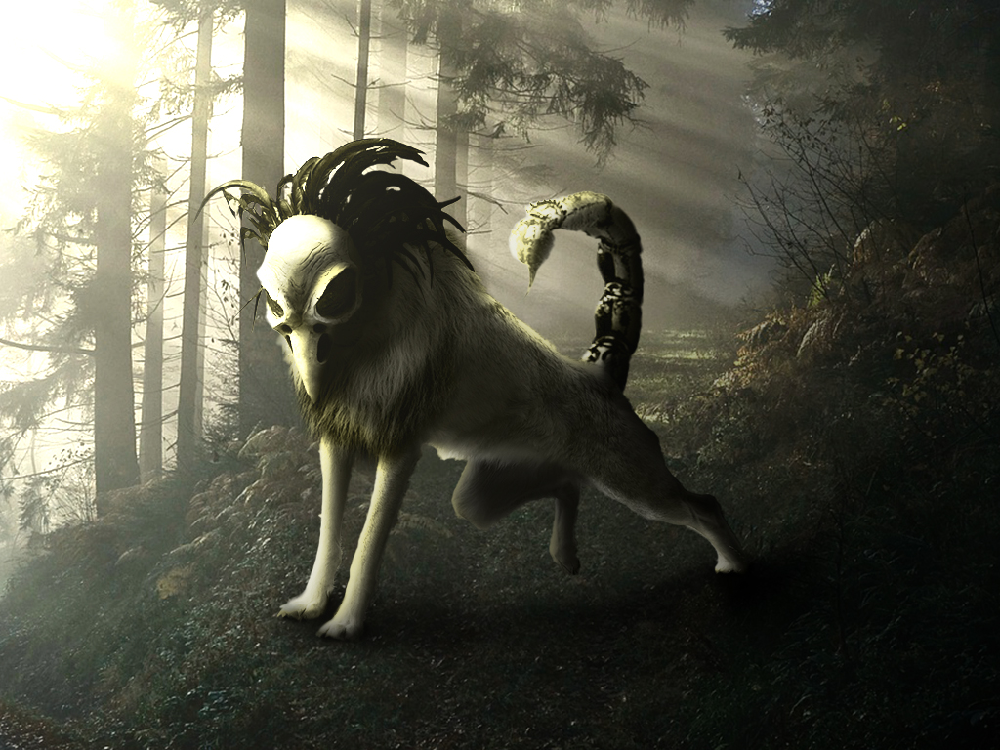

Lycée Costebelle
2020-2023
J’ai passé mon année de lycée à Costebelle. Ici, j’ai choisi les options SVT (Science de la Vie et de la Terre) et Mathématiques, je m’orientais vers un BAC scientifique. Honnêtement à cette époque j’hésitais entre devenir soigneuse animalière et animatrice 2D. C’est durant ces années que je me suis posée beaucoup de questions pour mon avenir. Par peur de perdre ma passion pour l’art, j’ai optée pour le choix de soigneuse animalière. Ceci dit, je gardais l’option Art Plastique.
J’arrivais alors à l’université de Toulon à la Garde. J’ai décidé de suivre alors une formation pour une licence en biologie sur 3 ans. Au fil de l’année, j’avais certes de bonnes notes, mais petit à petit je me rendais compte que ce n’est pas vraiment ce que j’aimais. Ceci dit, j’ai tout de même appris à être plus responsable et autonome. A la fin de l’année, je me suis alors réorientée après les conseils de la directrice.

IUT de Toulon (Biologie)
2023-2024

IUT de Toulon (MMI)
ACTUEL
Et me voilà enfin au BUT MMI de Toulon. Au départ, j’avais surtout rejoins car je voulais faire de l’animation 2D, ce qu’on ne fait malheureusement pas, du moins, pas beaucoup. Au final, j’ai appris bien plus de choses que ce soit dans le design, le graphisme, le développement web ou l’UX/UI. Cette formation m’a vraiment appris les bases du monde numérique et je sais que je les utiliserais toujours quel que soit mon projet. Et ajourd’hui, je continue cette formation jusqu’au bout.